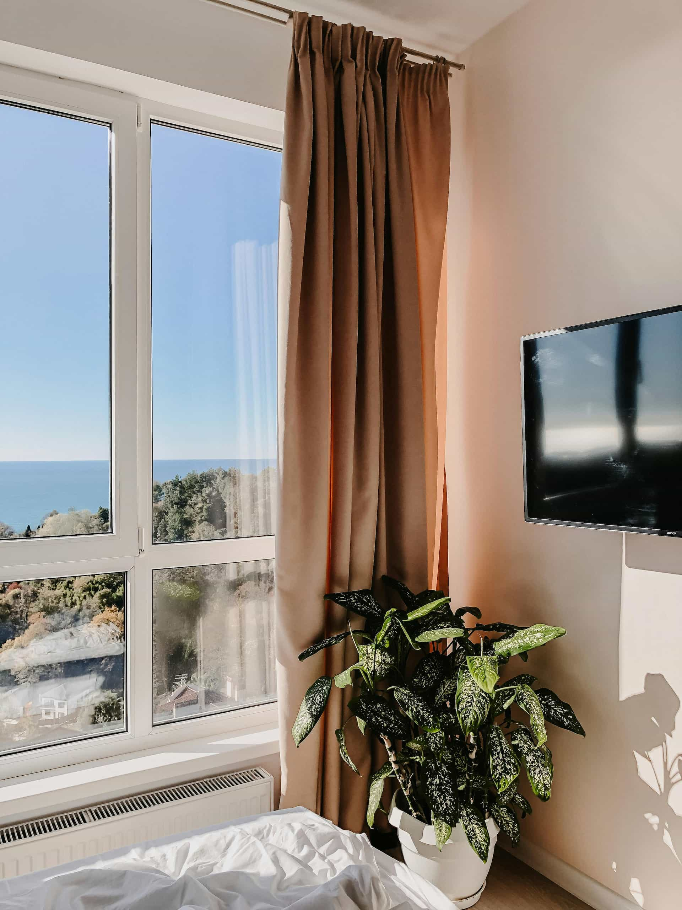

Cause of glass issue
Ask whether the issue is cracked glass, failed seal, fogging, impact damage, thermal stress, or a problem connected to the frame or sash.
Frame & Light helps homeowners request contact from independent providers for cracked glass, fogged panes, broken seals, and insulated glass unit replacement. The platform does not replace glass directly.

Glass replacement may be relevant when a pane is cracked, broken, fogged between layers, affected by a failed seal, or part of an insulated glass unit that no longer performs as expected.
In some cases, replacing the glass unit may be more practical than replacing the entire window. In other cases, frame condition, age, seal failure, or product availability may lead providers to recommend a broader solution.
Frame & Light helps homeowners submit the project basics so independent local providers may review the category and explain possible glass replacement options directly.
A strong glass replacement conversation should clarify the cause of the issue, the type of glass needed, whether the frame is reusable, and what warranty terms apply.
Ask whether the issue is cracked glass, failed seal, fogging, impact damage, thermal stress, or a problem connected to the frame or sash.
Confirm how the provider measures the glass unit, who verifies the size, and how custom or specialty glass is ordered.
Compare tempered, laminated, low-E, insulated, tinted, patterned, double-pane, or triple-pane glass options where relevant.
Review labor, glass type, ordering timeline, disposal, exclusions, seal warranty, product coverage, and any conditions that may affect the work.
Glass replacement details can vary depending on the window type, glass unit, safety requirements, measurements, availability, and whether the frame is still in good condition.
Replacing a simple pane can differ from replacing a sealed insulated glass unit with multiple layers and specific performance properties.
Tempered, laminated, privacy, patterned, tinted, or impact-resistant glass may affect cost, ordering time, and provider recommendations.
If the surrounding frame or sash is damaged, warped, or water-affected, a glass replacement alone may not solve the full problem.
Custom sizes, coatings, grids, tint, or specialty glass may require ordering and may not match older glass perfectly without careful review.

Share the visible issue, window type, location, and timing. Then compare provider responses directly, including glass specifications, measurement process, lead time, warranty terms, and whether the frame also needs attention.
This request does not schedule glass replacement with Frame & Light. Independent providers may contact you directly if available for your area and project category.
Before hiring, verify licensing, insurance, written scope, glass specifications, warranty terms, pricing, timeline, and contract conditions directly with each provider.
No. Frame & Light is an independent matching platform. It does not replace window glass or perform contractor work directly.
Sometimes, yes. If the frame and sash are in good condition, a provider may discuss glass-only or insulated glass unit replacement. Confirm the best option directly with the provider.
Fog between panes often suggests a failed seal in an insulated glass unit. A provider can explain whether glass unit replacement or a broader window solution is appropriate.
Pricing may depend on pane size, glass type, safety requirements, insulated glass unit specifications, access, ordering time, labor, and provider-specific pricing.
Ask about measurements, glass specifications, safety requirements, ordering timeline, warranty coverage, disposal, labor scope, and whether the frame also needs repair.